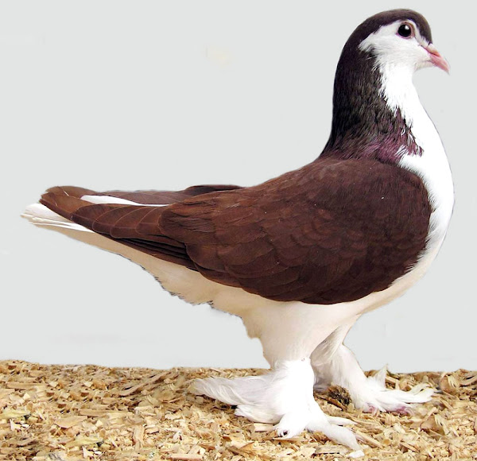
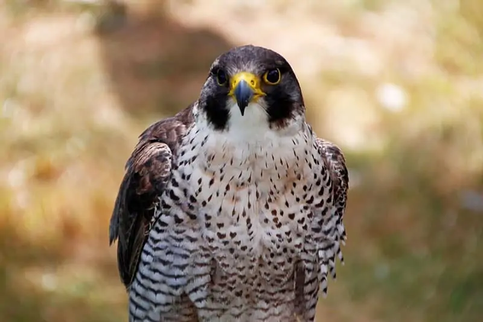

No other bird has had such close links with man, nor been useful to him in so many ways. Over the centuries the pigeon has served him as symbol, sacrifice, source of food and, not least, as a messenger, both sacred and secular. It has also played a minor role as bait and decoy in the ancient sport of falconry and was massacred by the hundred in the English pigeon-shooting matches of the 19th century. Today, the gentler pursuits of pigeon fancying and racing both have a large following in many parts of the world. It cannot be said that the pigeon is a very popular bird nowadays. In the cities of the world, where most of them now live, they are much in the public eye but are generally regarded as a civic nuisance. Today, people are divided into those who love the creatures and those who detest them. Sadly, this current prejudice overlooks many aspects of the bird’s long history and fails to acknowledge the great debt owed to it in the past; it is not just any other bird.
There’s also evidence wild pigeons were a staple food source for Neanderthals, and later humans, beginning at least 67,000 years ago. More well known is the domesticated pigeon’s invaluable service of long-distance communication for many different civilizations, from the ancient Romans to Genghis Khan. “For much of their history, they signified wealth and power,” says Mosco. “They were flying Ferraris.” In some parts of the world, the fastest pigeons still fetch mind-boggling sums. In 2020, a single racing pigeon named New Kim sold for around $1.9 million in a Belgian auction With pigeons everywhere we look in urban life, it may be difficult to imagine a world without the cooing flocks. But even these adaptable birds are not immune to extinction. In the 1800s, the passenger pigeon (Ectopistes migratorius) was thought to be one of if not the most numerous birds in the world, with a population of around three billion animals. But then, in less than a century, humans eradicated the species from the wild thanks to an insatiable hunger for the bird’s inexpensive meat combined with widespread deforestation. In 1914, the last known passenger pigeon, named Martha, died in captivity at the Cincinnati Zoo—as stark a reminder as ever that we should appreciate the beautiful and diverse pigeons we have before they’re gone.
Seeds form the major component of the diet, but it varies greatly according to species. Some ground feeding species (granivorous species) eat fruit and take insects and worms. One species, the Atoll Fruit Dove, has adapted to taking insects and small reptiles. The feral pigeon found in urban areas exists exclusively on a diet of seed (normally from human sources) and human refuse, such as fast food waste. Wood pigeons have a varied diet which includes vegetables and berries.
Age varies greatly from 3-5 years through to 15 years dependent on many factors, including natural predation and human interference. The wild pigeon is predated upon, almost exclusively, by the peregrine falcon, a bird that is also found living and breeding in coastal regions. The sparrowhawk may also predate on the wild pigeon. The feral pigeon has few if any natural predators, with man being the main threat to the bird in areas of human habitation.

Excessive reproduction of pigeons posing threat to other bird species and human health
For more information about pigeons click the following link
More about Pigeons